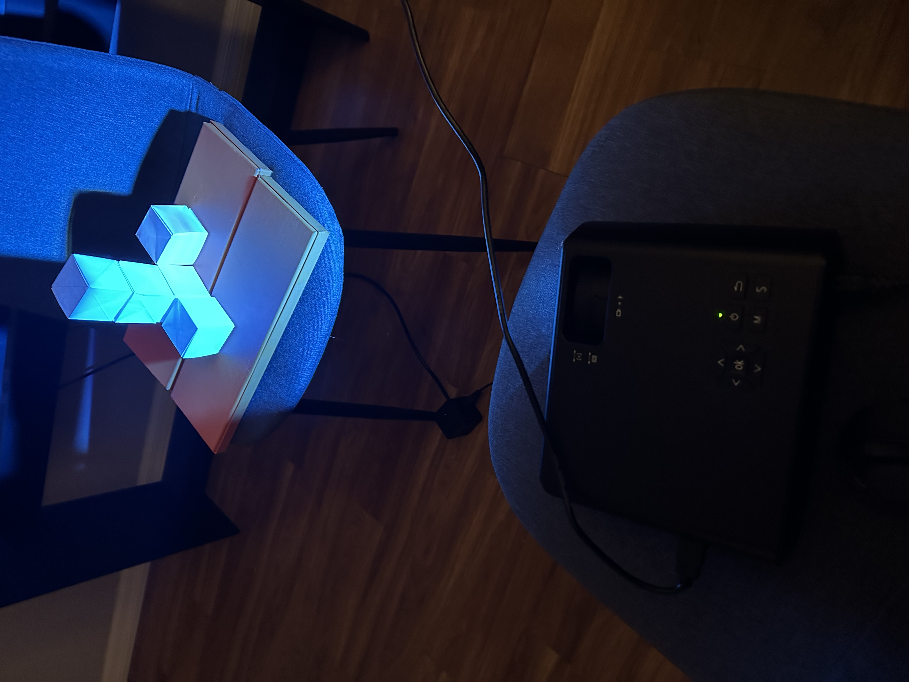
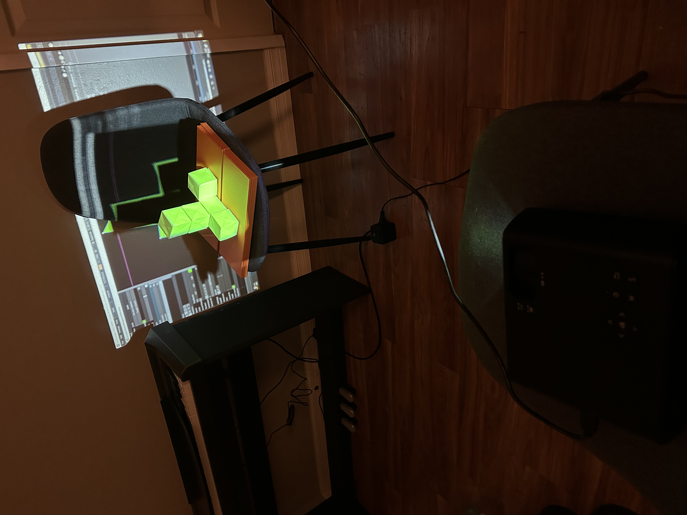
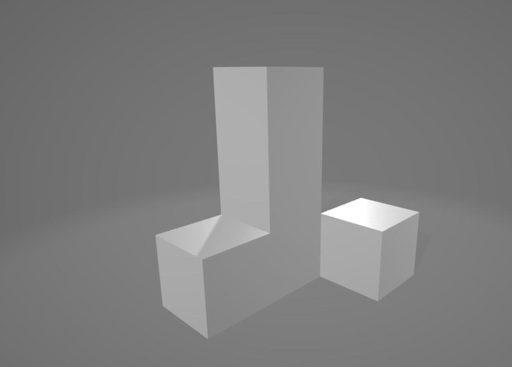
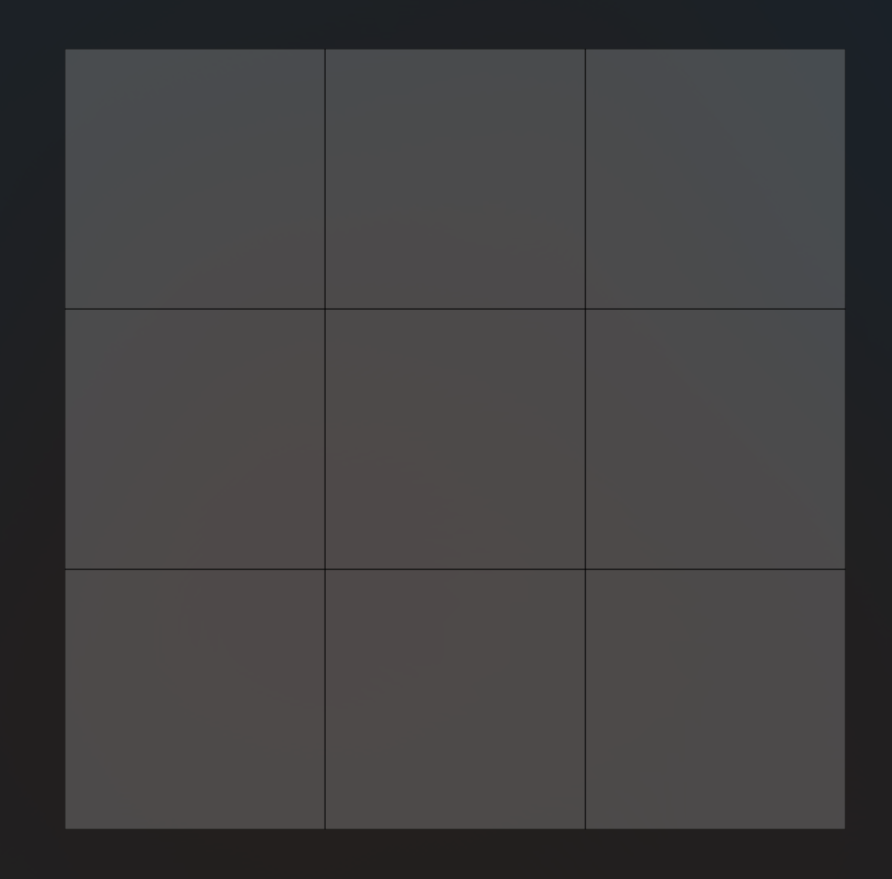
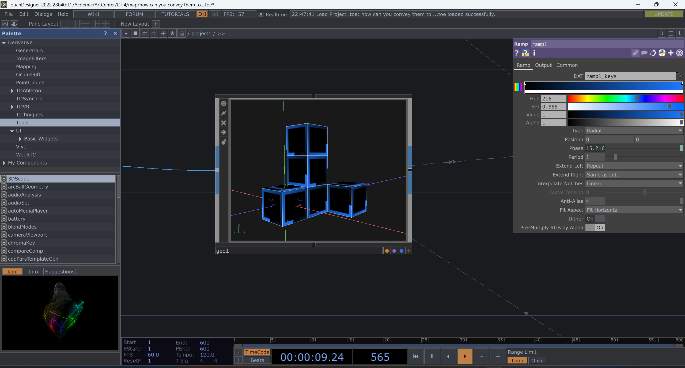
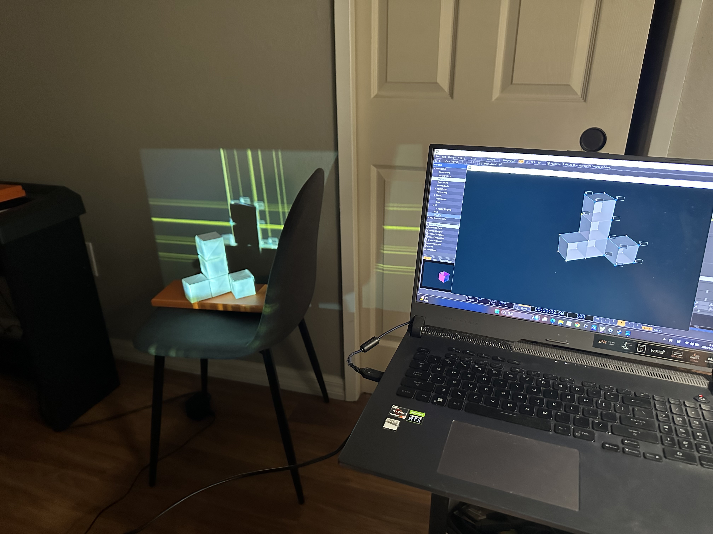
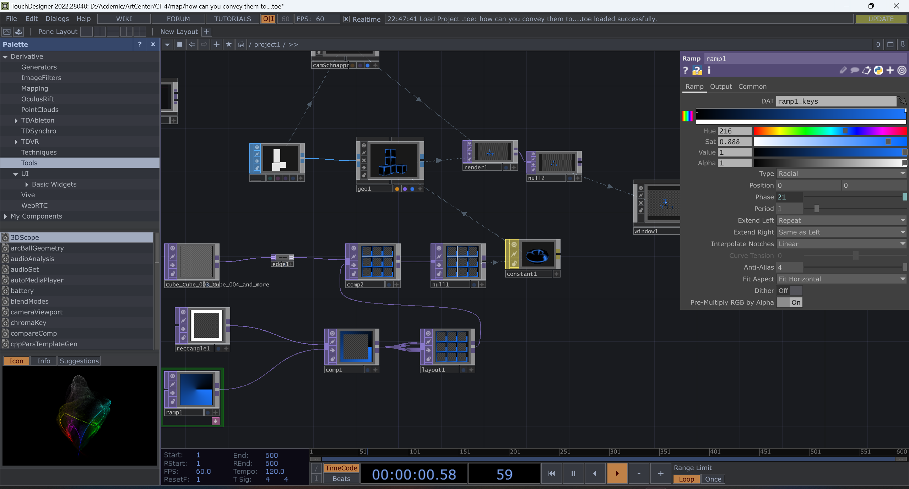
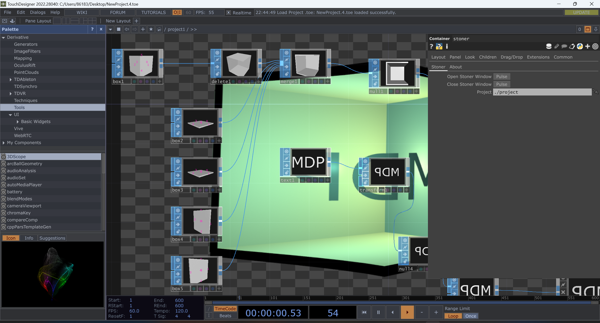
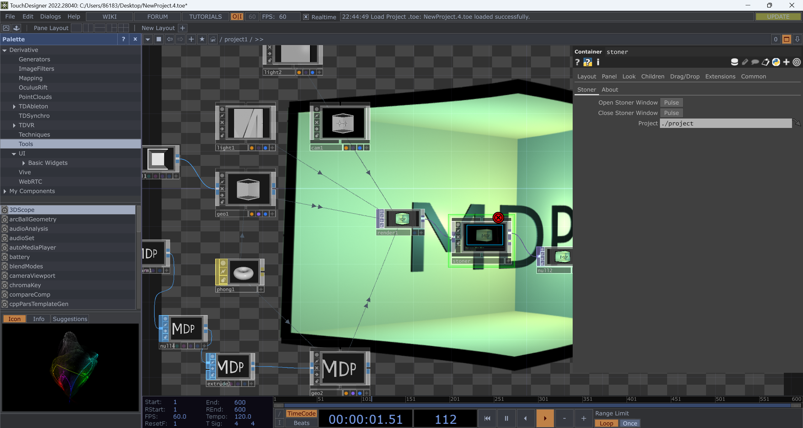

Kaiyi Tan_Creative Tech 4_ Projection mapping assignment


Fold five cubes out of paper and build them into the desired shape.

Test multiple monitors


Test kantanMapper



Build a previously built model in blender, export the model and its floor plan, and import them both into Touchdesigner.


Test camSchnapper. Programming in Touchdesigner


Test Stoner_a type of mapping